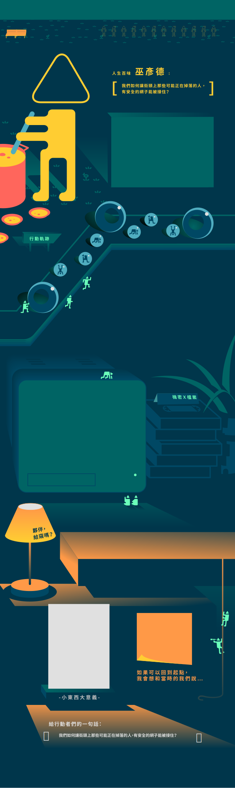
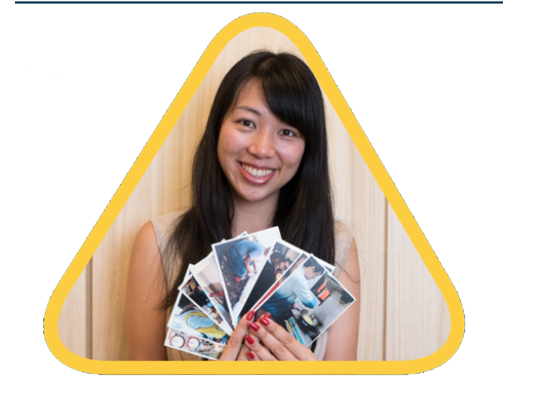
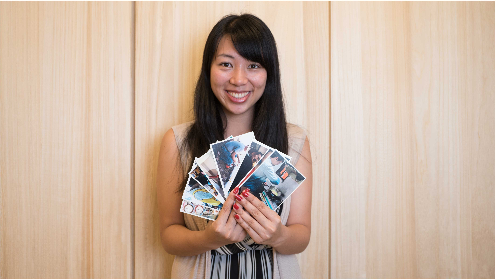

整個城市都是你的教室——城市浪人
有感於青年在既有教育體制中，極少關心「自我探索」與「社會參與」，因此無法在畢業時進入適合自己發展的領域，或是過於專注於個人發展，而忽略了社會其他群體的需求。城市浪人鼓勵人們翹掉不滿意的生活，把城市當成教室，透過「流浪挑戰賽」，用最有趣的方式探索自我、參與社會，而找到想花一輩子追尋的熱情，成為讓別人快樂的存在。城市浪人相信，改變世界，不是一個人做了很多，而是很多人都做了一點點。從 2013 年創辦至今，影響超過 5000 名年輕人一齊認同並實踐「跨出舒適圈、探索自我、參與社會」的生活價值。
點擊不同的軌跡查看行動夥伴的故事！
行動軌跡 - Action 1
大四下的時候，希慈開始了城市浪人的專案。那時候並沒有想說教育體系出了什麼問題，是剛好有課程的分組作業要完成。透過關鍵字的發想，他們發現，大家對於學校外的事情、對於挑戰都很感興趣。去健身房跑步時看到「瘋台灣」這個節目，主持人帶著外國人破關、找線索，用有趣的方式認識臺灣傳統文化，但是怎麼都沒有「臺灣人」用這樣子的方式來認識臺灣？一開始他們並沒有做什麼使用者研究或是田野調查，也沒有特別去定活動的核心理念，就是單純想說如果只有自己去旅行和嘗試，都要花一個學期做這件事情了，為什麼不讓更多人一起感受和參與這個過程，於是發展成「比賽」的形式。因為這件事情很酷，大家都很投入，最後引起的迴響更超乎了原先的預期。
行動軌跡 - Action 2
辦完兩次活動之後，城市浪人在學生之中掀起一陣風潮，社會上似乎也多了一股探索的風氣在逐漸醞釀。他們開始思考是發生什麼事了，為什麼大家都想做這件事情、參加我們的活動？畢業後的希慈更一心投入城市浪人的籌備計畫之中。然而，當時團隊面臨的挑戰是彼此對於這個活動的期待與想像各不相同，也會爭論著怎麼樣才是這個組織該有的樣子，無法有很明確的共識。過程中也有夥伴因此而離開，但希慈留下來了，且堅定地相信：「我知道城市浪人的確還有不清楚的地方，但是它一定有存在的價值，不然我們不會獲得這麼多的回饋，有這麼多人說它有意義。所以我決定去把它找出來。」
行動軌跡 - Action 3
「對我們來說，人的意義跟別人有關。」希慈談到城市浪人的願景，「如果你已經對現況不滿意了或意識到這不是你要的，那你不該抱怨而是該離開他，或者讓我們幫你一起離開。如果我們做的事情只是讓大家關注自己的幸福，那這不是我所希望看到城市浪人的樣貌。」
一路以來，他們意識到需要打破的好像就是教育上的問題。每個人都有需要被陪伴或是解決的問題，不論性別、工作、經濟狀況，任何人都一樣。城市浪人希望把整個城市當教室，陪著青年在這麼多的人、這麼多問題之中，找到自己想投入一輩子追逐的熱情所在，然後透過行動去解決問題，實現他的志業，成為別人快樂的存在。
2013.05 第一屆比賽完成
團隊向心力強、團隊擴張
2013.11 第二屆比賽完成
團隊開始迷茫不確定未來方向
2014.02 第一次授權
香港、成大想舉辦比賽，開始思考授權方向
2014.11 團隊紛爭
團隊成員因為方向不相同，重新整理團隊組成
2015.08 協會登記
在第一屆影子實習生協助下完成法人登記
2017.05 獲選 Forbes 30 under 30
獲得國際認可
Q：團隊是什麼時間點發現到要去釐清成立的意義以及定位的不明確？
A：
其實釐清這件事情並不是一個點，或一次會議就能達成，而是需要長時間大量的討論。城市浪人在開始第一年結束之後才開始認真思考這件事情，這是一個非常痛苦、非常恐怖的過程。什麼是城市浪人的使命？沒有人會告訴你。就像是一個無助的孩子，你不會知道去哪裡找答案、甚至不會有所謂「正確答案」的存在。即使跟很多的人聊，但是最終還是自己要去 define 那個價值。
尋找城市浪人的定位，是一個牽涉到價值觀、信仰、對社會的理解，以及跟組織發展和管理等相關知識的過程。你要看很多的書，要跟自己對話，必須要足夠了解自己的信仰跟堅持，組織的信仰才會存在。
Q：站在城市浪人的角度看到最想點出的問題是什麼？
A：
我們的社會對人的包容心跟信任感真的很弱。我們從小就被教育不要跟陌生人講話、不要拿陌生人的東西、晚上不要出門、不要走暗巷，其實就是預設這些地方很危險、不值得信任。但我的個性是這樣，我相信別人不會害我，所以我是用人性本善的預設去跟別人互動。
的確我因為這樣遇過一些壞人，他們也真的傷害了我。但是我遇過更多更多的好人，那些善意讓我的生活很幸福，遠遠大過於被傷害這件事。那些傷害別人的人，可能一輩子沒有接受過這些無條件地莫名其妙的善意。因此我相信用這種信仰與價值觀去生活，越多人去相信這件事，這樣傷害別人的人才有機會不見，這是台灣教育裡面很不敢去碰觸的一件事情。
Q：這一路走來最痛苦的一段日子？
A：
就是在想組織願景的那一年。那一年真的太痛苦了！有時候騎摩托車突然停下來爆哭，覺得沒有人可以找、可以去幫忙解決問題，因為所有人都在等你的答案。一直覺得自己被打了巴掌說：「你就是沒有想出來。」因為我營運管理也不熟，理念也想不出來，那一年真的覺得很對不起身邊重要的人。
一路走來這條路上我很感謝我的家人，他們沒有給我任何的時間壓力或是負面批評，我有需要心靈陪伴的時候，他們也一直都在，他們做的就是同理我以及不斷默默地陪伴著我。
Q：想像十年後台灣因為你們而改變的樣子會是怎樣，而你們扮演的角色是？
A：
我覺得臺灣人會變得非常不一樣。大家不會去批評別人為什麼跟我不一樣，而是會去好奇他跟我不一樣的原因，並且會勇於去討論和思考群體跟自己的關係，去行動、去做自己該做的事情。不容易但是我相信她會發生，我也希望她發生。
我希望透過城市浪人的努力，在未來社會裡面的公民，都能夠找到自己一輩子要去實踐的使命，而這個使命是能夠和社會緊密連結在一起，帶給其他人幸福的。那時候的城市浪人就不需要存在了，因為我們已經把這樣的功能和期許融入社會氛圍當中了。
用 6000 元把想法變行動
A：
第一步行動
舉辦 1-2 場小型的活動樣本，測試哪種活動比較適合團隊執行以及評估效果如何。
預算分配
5000 活動計畫成本 用於舉辦實體活動的成本
1000 人事、團隊維護成本 用於維護團隊關係、會議的成本
為什麼會這樣分配
我們過去確實曾經獲得過約 1-2 萬的資金，多用於活動舉辦。除了可以透過活動報名費得到一些回收之外，也能增加品牌知名度，以及測試我們到底適合用什麼樣的方式服務大家 (實體活動也有很多不同形式 )。

釐清自己的定位

城市浪人看見的問題

最痛苦的那些日子

城市浪人讓十年後的臺灣.....

用 6000 元把想法變行動
A：蛤～好累喔
A：莫名其妙的覺得我們可以解決問題
A：要睡覺
點擊包包！
A：亂想一些奇怪的事給大家做的人
A：彩虹麗子
